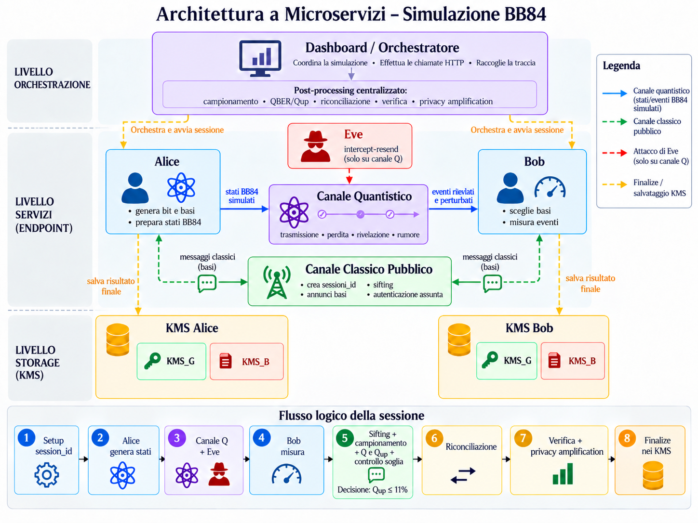

Master's thesis
BB84 Quantum Key Distribution Emulator
From channel conditions to final key availability.
The idea
From channel conditions to final key availability.
My master's thesis, Sicurezza quantistica applicata: studio sperimentale di un'infrastruttura QKD, translates the BB84 protocol into a software platform. It connects channel conditions, error estimation, reconciliation and final key availability in an observable workflow.
The approach
Model the link
Simulate event-level BB84 states, fibre losses, detector efficiency, optical errors, channel noise and intercept-resend attacks.
Process the session
Follow basis comparison, sifting, sampled QBER estimation, a conservative sampling bound, reconciliation and key verification.
Observe the outcome
Inspect protocol decisions and final key availability through the dashboard, session traces and KMS records.
Architecture
Eight services. One observable workflow.
Alice and Bob interact through simulated quantum and classical channels. Eve models intercept-resend; the dashboard coordinates the session and its post-processing. Separate KMS services record the two endpoints' outcomes.

Sicurezza quantistica applicata
Studio sperimentale di un'infrastruttura QKD
Master's thesis, Università Campus Bio-Medico di Roma, 2026.
For access to the software source repository, please contact me.
What I took from it
From implementation
to understanding.
I designed and implemented the platform with Python, FastAPI and Docker Compose. Its value is connecting protocol theory with a working, inspectable software system. The model is a simulation and has not been calibrated against a physical QKD apparatus.